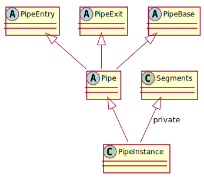

Pipes
Pipes can be used to compose functionality, such that data streams through a pipe and is modified on the go. Pipes are sequence of objects, which inspect and/or modify the data that is passed through it.
A pipe consists of pipe segments, which are combined into a single pipe object.
Pipe segments cannot be accessed or split in run-time, they are absorbed into some complex template-based recursive type, implementing the Pipe interface.
Pipes, however, can be connected dynamically.
Pipes always have the following form, for a given type T:
1auto pipe =
2 Entry<T>{} >>
3 // pipe segments...
4 Exit{};
pipe is a pipe instance, taking data of type T, and producing it, such as 1 >> pipe;, or pipe.extract();.
It can be connected to other pipe instances dynamically.
1auto pipe =
2 Entry<T>{} >>
3 // pipe segments...
4 Cap{};
In this case, pipe is an instance, with a cap at the end; it does not allow dynamic binding to other pipes.
1auto& pipe =
2 Entry<T>{} >>
3 // pipe segments...
4 Ref{};
Now, pipe is a reference, like the capped pipe above.
It is automatically destroyed at shutdown (by the stored::pipes::gc Group).
When a group reference is passed to Ref{...}, the pipe is still allocated using the default allocator, but added to the provided group, instead of gc.
Pipe segments can be connected, such as:
1auto& pipe =
2 Entry<int>{} >>
3 Tee{
4 Entry<int>{} >>
5 Log<int>{"tee 1"} >>
6 Ref{},
7
8 Entry<int>{} >>
9 Call{[](int x) { printf("tee 2 = %d\n", x); }} >>
10 Ref{}
11 } >>
12 Buffer<int>{} >>
13 Cap{};
A pipe segment has to adhere to the following rules:
It must be a
structorclass. No specific base classes have to be used. No specific (virtual) interface is defined.It must implement a
B inject(A)member function, where the typesAandBcan be freely chosen. In fact, havinginject()makes a class a pipe segment. Theinject()function is used to extract the pipe segment’s input typeAand output typeB. You are free to choose if the type is a value or reference, or cv-qualified.It may implement
B_ extract(), whereB_must compatible withB. However,Bcould beconst&, whileB_is just a value, for example.It may implement
A_ entry_cast(B_) constand/orB_ exit_cast(A_) const, whereA_andB_for both functions must be compatible withAandB.It may implement
B_ trigger(bool*), whereB_must be compatible withB.It must be move-constructable.
Preferably, keep pipe segments simple and small. Create complexity by composition.
For examples, check include/libstored/pipes.h, and especially the Identity class implementation for the simplest form.
The following functions are available for pipes, and can be available for pipe segments:
B inject(A)Inject a value into the pipe (segment). The function returns the output of the pipe (segment). This is the normal direction of the data flow.
B extract()This function tries to find data from the exit of the pipe back through the segments. Usually, it returns the value of the last
Bufferin the pipe. If there is no such segment, a default constructedBis returned. If a pipe segment does not support extraction, it can omit the function.A entry_cast(B) constType-cast the given pipe (segment) output type to the input type. It should not modify the state of the pipe (segment). When omitted, it is assumed that the input and output types are assignable.
B exit_cast(A) constType-cast the given pipe (segment) input type to the output type. It should not modify the state of the pipe (segment). When omitted, it is assumed that the input and output types are assignable.
B trigger(bool*)Some pipe segments have a special side-effect, such as reading external data. It may implement the trigger function to perform this side-effect. The parameter can be used to indicate if the pipe (segment) has returned any data by writing
trueto the provided pointer. The first pipe segment that provides data by a trigger, injects this data into the remainder of the pipe.

stored::pipes::PipeBase
Warning
doxygenclass: Cannot find class “stored::pipes::PipeBase” in doxygen xml output for project “doxygen” from directory: /home/runner/work/libstored/libstored/dist/ubuntu/build/sphinx/doxygen/xml/
stored::pipes::Pipe
Warning
doxygenclass: Cannot find class “stored::pipes::Pipe” in doxygen xml output for project “doxygen” from directory: /home/runner/work/libstored/libstored/dist/ubuntu/build/sphinx/doxygen/xml/
stored::pipes::PipeEntry
Warning
doxygenclass: Cannot find class “stored::pipes::PipeEntry” in doxygen xml output for project “doxygen” from directory: /home/runner/work/libstored/libstored/dist/ubuntu/build/sphinx/doxygen/xml/
stored::pipes::PipeExit
Warning
doxygenclass: Cannot find class “stored::pipes::PipeExit” in doxygen xml output for project “doxygen” from directory: /home/runner/work/libstored/libstored/dist/ubuntu/build/sphinx/doxygen/xml/
stored::pipes::Group
Warning
doxygenclass: Cannot find class “stored::pipes::Group” in doxygen xml output for project “doxygen” from directory: /home/runner/work/libstored/libstored/dist/ubuntu/build/sphinx/doxygen/xml/
There is one special group: stored::pipes::gc, which destroys pipes created with default Ref.
stored::pipes::Buffer
Warning
doxygenclass: Cannot find class “stored::pipes::Buffer” in doxygen xml output for project “doxygen” from directory: /home/runner/work/libstored/libstored/dist/ubuntu/build/sphinx/doxygen/xml/
stored::pipes::Call
Warning
doxygenclass: Cannot find class “stored::pipes::Call” in doxygen xml output for project “doxygen” from directory: /home/runner/work/libstored/libstored/dist/ubuntu/build/sphinx/doxygen/xml/
stored::pipes::Cast
Warning
doxygentypedef: Cannot find typedef “stored::pipes::Cast” in doxygen xml output for project “doxygen” from directory: /home/runner/work/libstored/libstored/dist/ubuntu/build/sphinx/doxygen/xml/
stored::pipes::Changes
Warning
doxygenclass: Cannot find class “stored::pipes::Changes” in doxygen xml output for project “doxygen” from directory: /home/runner/work/libstored/libstored/dist/ubuntu/build/sphinx/doxygen/xml/
Warning
doxygentypedef: Cannot find typedef “stored::pipes::similar_to” in doxygen xml output for project “doxygen” from directory: /home/runner/work/libstored/libstored/dist/ubuntu/build/sphinx/doxygen/xml/
stored::pipes::Constrained
Warning
doxygenclass: Cannot find class “stored::pipes::Constrained” in doxygen xml output for project “doxygen” from directory: /home/runner/work/libstored/libstored/dist/ubuntu/build/sphinx/doxygen/xml/
Warning
doxygenclass: Cannot find class “stored::pipes::Bounded” in doxygen xml output for project “doxygen” from directory: /home/runner/work/libstored/libstored/dist/ubuntu/build/sphinx/doxygen/xml/
stored::pipes::Convert
Warning
doxygenclass: Cannot find class “stored::pipes::Convert” in doxygen xml output for project “doxygen” from directory: /home/runner/work/libstored/libstored/dist/ubuntu/build/sphinx/doxygen/xml/
Warning
doxygenclass: Cannot find class “stored::pipes::Scale” in doxygen xml output for project “doxygen” from directory: /home/runner/work/libstored/libstored/dist/ubuntu/build/sphinx/doxygen/xml/
stored::pipes::Get
Warning
doxygenclass: Cannot find class “stored::pipes::Get” in doxygen xml output for project “doxygen” from directory: /home/runner/work/libstored/libstored/dist/ubuntu/build/sphinx/doxygen/xml/
stored::pipes::Identity
Warning
doxygenclass: Cannot find class “stored::pipes::Identity” in doxygen xml output for project “doxygen” from directory: /home/runner/work/libstored/libstored/dist/ubuntu/build/sphinx/doxygen/xml/
stored::pipes::Log
Warning
doxygenclass: Cannot find class “stored::pipes::Log” in doxygen xml output for project “doxygen” from directory: /home/runner/work/libstored/libstored/dist/ubuntu/build/sphinx/doxygen/xml/
stored::pipes::Map
Warning
doxygenclass: Cannot find class “stored::pipes::IndexMap” in doxygen xml output for project “doxygen” from directory: /home/runner/work/libstored/libstored/dist/ubuntu/build/sphinx/doxygen/xml/
Warning
doxygenclass: Cannot find class “stored::pipes::OrderedMap” in doxygen xml output for project “doxygen” from directory: /home/runner/work/libstored/libstored/dist/ubuntu/build/sphinx/doxygen/xml/
Warning
doxygenclass: Cannot find class “stored::pipes::RandomMap” in doxygen xml output for project “doxygen” from directory: /home/runner/work/libstored/libstored/dist/ubuntu/build/sphinx/doxygen/xml/
Warning
doxygenfunction: Cannot find function “stored::pipes::make_random_map” in doxygen xml output for project “doxygen” from directory: /home/runner/work/libstored/libstored/dist/ubuntu/build/sphinx/doxygen/xml/
Warning
doxygenclass: Cannot find class “stored::pipes::Mapped” in doxygen xml output for project “doxygen” from directory: /home/runner/work/libstored/libstored/dist/ubuntu/build/sphinx/doxygen/xml/
Warning
doxygenfunction: Cannot find function “stored::pipes::Map” in doxygen xml output for project “doxygen” from directory: /home/runner/work/libstored/libstored/dist/ubuntu/build/sphinx/doxygen/xml/
Warning
doxygenfunction: Cannot find function “stored::pipes::Map” in doxygen xml output for project “doxygen” from directory: /home/runner/work/libstored/libstored/dist/ubuntu/build/sphinx/doxygen/xml/
Warning
doxygenfunction: Cannot find function “stored::pipes::Map” in doxygen xml output for project “doxygen” from directory: /home/runner/work/libstored/libstored/dist/ubuntu/build/sphinx/doxygen/xml/
stored::pipes::Mux
Warning
doxygenclass: Cannot find class “stored::pipes::Mux” in doxygen xml output for project “doxygen” from directory: /home/runner/work/libstored/libstored/dist/ubuntu/build/sphinx/doxygen/xml/
stored::pipes::RateLimit
Warning
doxygenclass: Cannot find class “stored::pipes::RateLimit” in doxygen xml output for project “doxygen” from directory: /home/runner/work/libstored/libstored/dist/ubuntu/build/sphinx/doxygen/xml/
stored::pipes::Set
Warning
doxygenclass: Cannot find class “stored::pipes::Set” in doxygen xml output for project “doxygen” from directory: /home/runner/work/libstored/libstored/dist/ubuntu/build/sphinx/doxygen/xml/
stored::pipes::Signal
Warning
doxygenclass: Cannot find class “stored::pipes::Signal” in doxygen xml output for project “doxygen” from directory: /home/runner/work/libstored/libstored/dist/ubuntu/build/sphinx/doxygen/xml/
stored::pipes::Tee
Warning
doxygenclass: Cannot find class “stored::pipes::Tee” in doxygen xml output for project “doxygen” from directory: /home/runner/work/libstored/libstored/dist/ubuntu/build/sphinx/doxygen/xml/
stored::pipes::Transistor
Warning
doxygenclass: Cannot find class “stored::pipes::Transistor” in doxygen xml output for project “doxygen” from directory: /home/runner/work/libstored/libstored/dist/ubuntu/build/sphinx/doxygen/xml/
stored::pipes::Triggered
Warning
doxygenclass: Cannot find class “stored::pipes::Triggered” in doxygen xml output for project “doxygen” from directory: /home/runner/work/libstored/libstored/dist/ubuntu/build/sphinx/doxygen/xml/